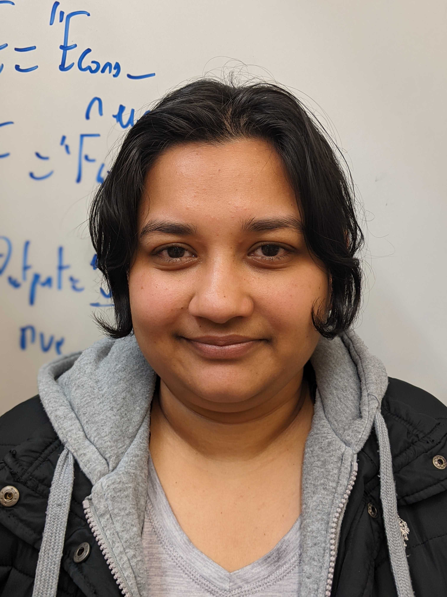
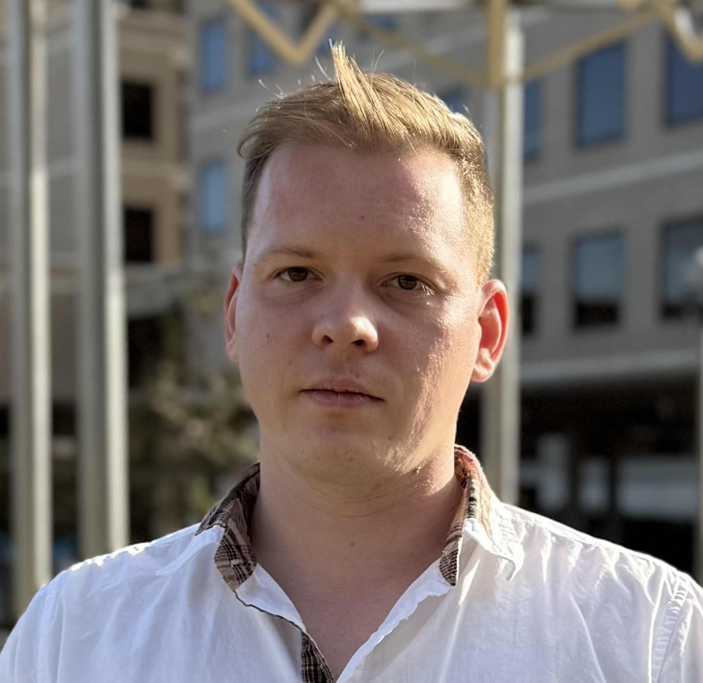
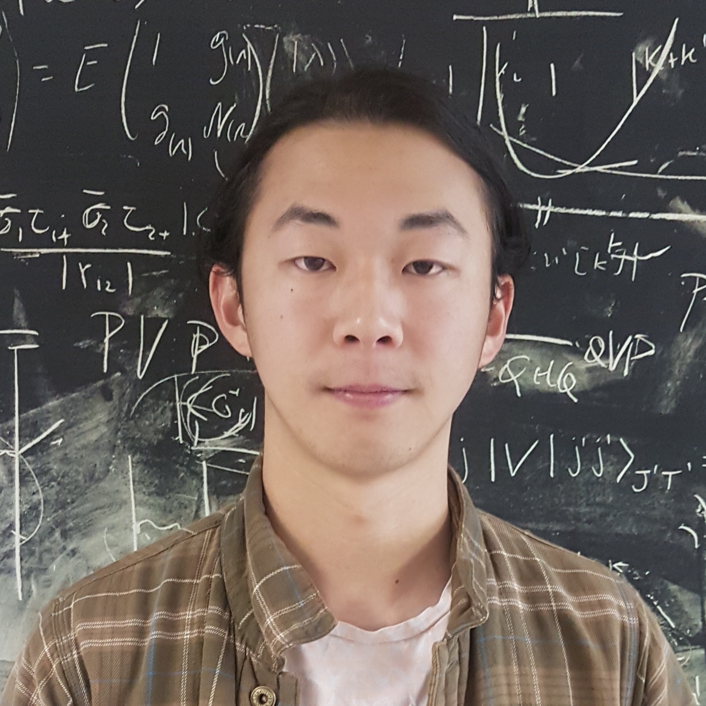

People
Participating Scientists
Fellows 10

University of New Hampshire and University of Notre Dame
- JG
Kent State University and University of Houston

Pennsylvania State University and University of New Hampshire

Indiana University and Iowa State University

Texas A&M University, University of Houston, and Kent State University

California State University Fullerton and University of Tennessee, Knoxville

Notre Dame University and Michigan State University
- AS
Alexander Smith
Pennsylvania State University

Los Alamos National Laboratory and Syracuse University
Executive Board 5
Syracuse University
Indiana University
Pennsylvania State University
Claudia RattiDirector
University of Houston
Raph Hix
University of Tennessee, Knoxville
Senior Investigators 16
Veronica Dexheimer
Kent State University
Joshua Dolence
Los Alamos National Laboratory
Joaquin Drut
University of North Carolina, Chapel Hill
Francois Foucart
University of New Hampshire
Christopher L. Fryer
Los Alamos National Laboratory
Kathleen M. Hill
Pennsylvania State University
William Raphael Hix
University of Tennessee, Knoxville
Jeremy W. Holt
Texas A&M University
Davide Lazzati
Oregon State University
Witold Nazarewicz
Michigan State University
Ralf Rapp
Texas A&M University
Jocelyn Read
California State University, Fullerton
Srimoyee Sen
Iowa State University
Rebecca Surman
Notre Dame University
Ingo Tews
Los Alamos National Laboratory
Ashley Villar
Pennsylvania State University
Advisory Committee 5
Manuela Campanelli
Rochester Institute of Technology
Wick Haxton
University of California, Berkeley
Sanjay Reddy
University of Washington
Hendrik Schatz
Michigan State University
Achim Schwenk
Technical University Darmstadt
Collaborators 29
Bruce Allen*
Max Planck Institute
Nils Andersson*
University of Southhampton
Stefan Ballmer
Syracuse University
Edo Berger
Harvard University
Sebastiano Bernuzzi*
University Jena
Szabolcs Borsanyi*
Universität of Wuppertal
Collin Capano
University of Massachusetts, Dartmouth
Eric Coughlin
Syracuse University
Iris Dillman*
TRIUMF
Tetyana Galatyuk*
Technical University Darmstadt
Arnau Rios Huget*
University of Surrey
James Lattimer*
Stony Brook University
Bao-An Li*
Texas A&M University, Commerce
Yuexing C. Li
Pennsylvania State University
Jérôme Margueron
Institut de Physique de 2 infinis de Lyon
Kit Martin
Pennsylvania State University
Zach Meisel*
Ohio University
Bronson Messer
Oak Ridge National Laboratory
Tony Mezzacappa
Univeristy of Tennessee, Knoxville
Allesandro Nagar*
INFN
Alex Nitz
Syracuse University
Richard O'Shaughnessy*
Rochester Institute of Technology
Albino Perego*
University of Trento
Sherwood Richers
University of Tennessee, Knoxville
Luke Roberts*
Michigan State University
Bangalore Sathyaprakash*
Pennsylvania State University
Fridolin Weber
San Diego State University
Daniel Whiteson
University of California, Irvine
*Collaborators on the original NP3M proposal
Affiliated Postdocs 5
Alexander Haber
Washington University in St. Louis
Rajesh Kumar
Kent State University
Chi Kit Cheong
Berkeley University
Hung Tan
Syracuse University
Kelsey Lund
UC Berkeley
Affiliated Graduate Students 23
Chaitanya Afle
Syracuse University
Milena Albino
Instituto de Física, São Paulo
Mahmudul Hasan Anik
University of Tennessee, Knoxville
Ananya Bandopadhyay
Syracuse University
Alexander Clevinger
Kent State University
Abhishek Das
Pennsylvania State University
Craig Dilliplane
Indiana University
Delaney Farrell
San Diego State University
Jacob M. Fields
Pennsylvania State University
Michael Kahangirwe
University of Houston
Jamie M. Karthein
University of Houston
Suman Kumar Kundu
Syracuse University
Erick Leon
Syracuse University
Jorge Morales
Indiana University
Angel R. Nava Acuna
University of Houston
Surendra Padamata
Pennsylvania State University
Aviral Prakash
Pennsylvania State University
Brendan Reed
Los Alamos National Laboratory
Satyajit Roy
University of Tennessee, Knoxville
Hitansh Shah
University of Houston
Sierra Thomas
Syracuse University
Yuhan Wang
Kent State University
Jianchun Yin
Indiana University
Affiliated Undergraduate Students 3
Damien Price
University of Houston
Michael Trujillo
University of Houston
Gema P. Villegas
Florida International University